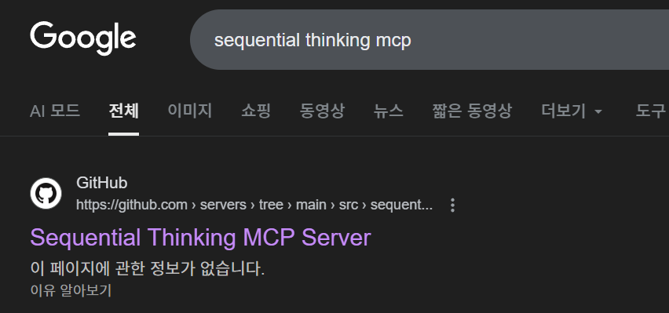
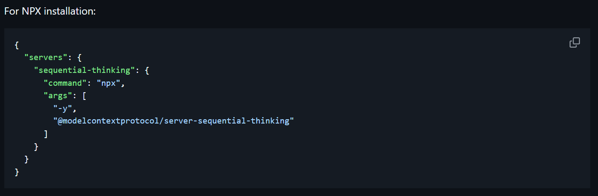

MCP란 무엇인가?
인공지능(AI) 모델이 외부 데이터 소스, 도구 및 시스템과
원활하게 상호 작용할 수 있도록 설계된
개방형 표준 프로토콜
핵심 가치
- AI와 외부 세계의 연결
- 표준화된 인터페이스
- 확장 가능한 생태계
MCP 도구 사용 방법
1단계: 검색

'~ MCP' 키워드로 검색
MCP 도구 사용 방법
2단계: 설치 확인

URL 접속하여 설치 방법 확인
설정 파일 구조
보통 아래와 같은 형식으로 설정합니다
{
"mcpServers": {
"sequential-thinking": {
"command": "npx",
"args": [
"-y",
"@modelcontextprotocol/server-sequential-thinking"
]
}
}
}
- mcpServers:
- MCP 서버들의 목록을 정의하는 최상위 객체
- command:
- MCP 서버를 시작하기 위해 실행할 명령어
- args:
- 명령어에 전달될 인수(arguments)들의 배열
5가지 MCP 도구
Sequential
Thinking
Thinking
Playwright
Context7
MagicUI
Chrome
DevTools
DevTools
🧠 Sequential-Thinking
🎭 Playwright

역할
AI 에이전트가 웹 브라우저를 직접 제어하고 자동화하는 도구
핵심 기능
- 웹페이지 탐색, 클릭, 폼 작성 등 사용자 행동 자동화
- 접근성 트리를 통한 상호작용으로 높은 신뢰성 보장
- 테스트 케이스 생성, 웹 스크래핑, 자바스크립트 실행 등
주요 용도
반복적인 웹 기반 작업 자동화, 웹 애플리케이션 테스트, 데이터 수집
📚 Context7
✨ MagicUI
🔧 Chrome DevTools
MCP 도구 한눈에 비교
| 도구 | 주요 역할 | 복잡도 | 용도 |
|---|---|---|---|
| Sequential | 단계별 사고 | ⭐⭐ | 분석·계획 |
| Playwright | 브라우저 자동화 | ⭐⭐⭐ | 테스트·자동화 |
| Context7 | 최신 문서 제공 | ⭐ | 참조·코드생성 |
| MagicUI | UI 컴포넌트 | ⭐⭐ | 디자인·프로토타입 |
| Chrome DevTools | 디버깅·분석 | ⭐⭐⭐ | 최적화·검증 |
THANK YOU!
Questions?